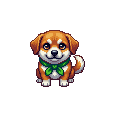

Созвон Квест не даёт забыть, что важно обсудить на созвоне: ты пишешь список, а по ходу разговора он отмечает, что уже сказано. Речь распознаёт и сверяет ИИ через AiTunnel: российский сервис, оплата в рублях, без VPN. Ключ хранится только на этом компьютере.
Зарегистрируйся, пополни баланс на 200–300 ₽ и скопируй API-ключ из личного кабинета. Час созвона обходится примерно в 120 ₽: распознавание речи двух собеседников плюс сверка.
Перед созвоном напиши тезисы, по одному на строку. Звёздочка в начале строки — критичный тезис. Дальше просто говори: закрытия, серии и балл из 100 придут сами.
Гарнитура обязательна. Без неё микрофон слышит динамики, и слова собеседника попадают в твою дорожку.
Работает с любым созвоном — Телемост, Zoom, Meet, Teams: звук берётся из системы, а не из приложения.
Всё хранится локально в папке Документы → SozvonQuest: транскрипт, разбор, балл.
Спросить, сказать, договориться — по одному пункту на строку. Звёздочка в начале строки = критичный: вес двойной, пропуск режет ранг.

Лучший результат и все сессии. Клик открывает разбор.
Запись моно, говорящих разделила диаризация. Выбери свою дорожку — только она пойдёт в сверку тезисов.